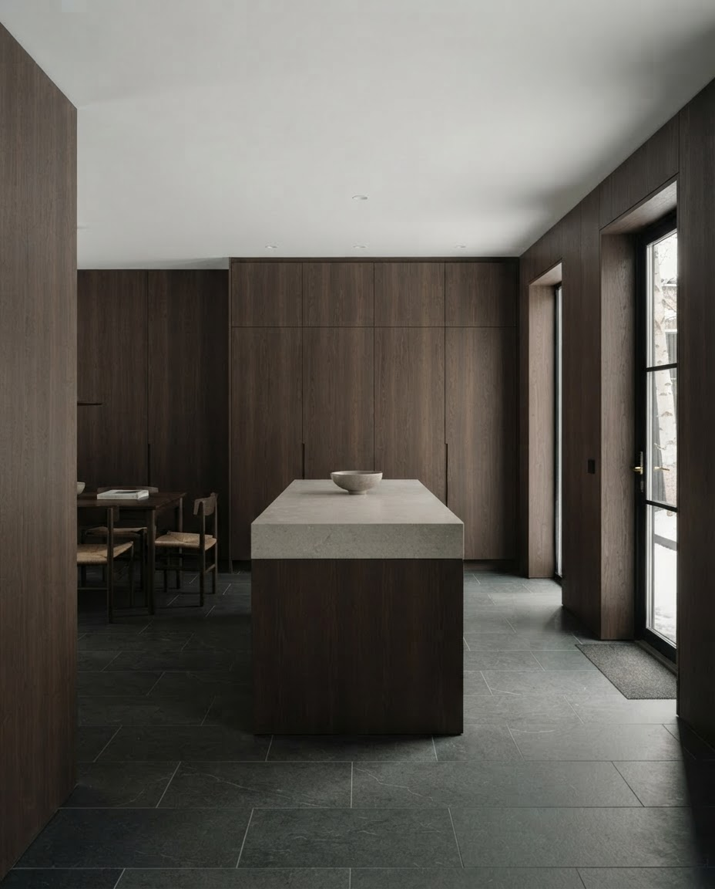
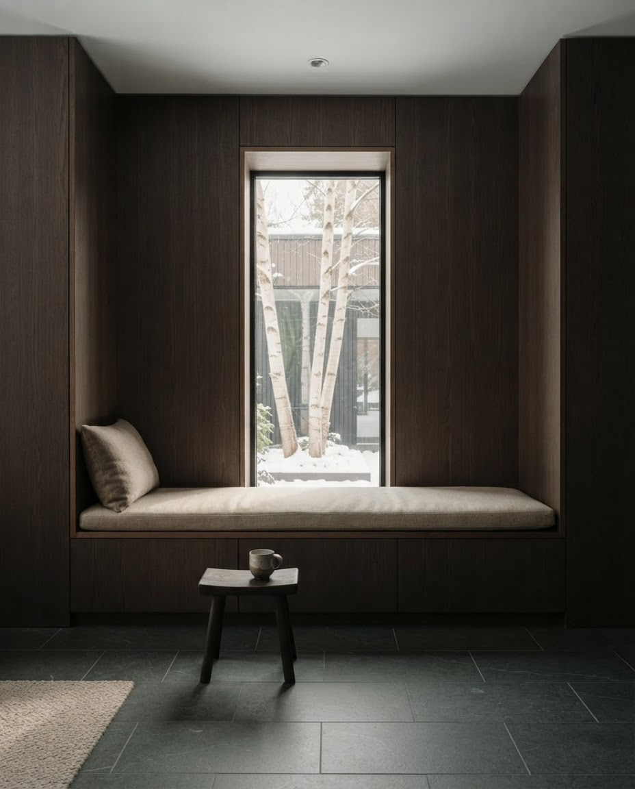

Huset Eik
A quieter way through winter.
Huset Eik is a home in Oslo, shaped around the slower rhythms of the Nordic winter. Dark oak and slate give the rooms a quiet weight, while tall windows draw the low light deep into the house.
Oak panelling brings warmth to the walls and built-in seating. Underfoot, slate gives way to pale stone at the stair, where a solid, dark balustrade cuts through the softer grain of the wood. Linen cushions soften the window seats, making places to sit close to the light. The palette is deliberately small, leaving the materials and the changing daylight to give each room its character.





Project Details
-
Project Huset Eik

-
Location Oslo, Norway
-
Type Residence
-
Year 2024
-
Size 210 m²
-
Scope Interior ArchitectureMaterial Selection
-
Materials Smoked OakSlatePale Stone
-
Imagery AI-generated